VMS.DeepLearning — 데이터셋 · 라벨링 · 딥러닝 모델 학습 · 모델 파일(ONNX) 내보내기
문서 버전 v1.0 (2026-09-08) · 대상 SW v1.31.0 이상 · 본편 「BODA VMS 사용자 매뉴얼 v2.0」의 6장을 분리한 문서
딥러닝 검사 도구(비전 설정의 Deep Learning 카테고리 — 본편 매뉴얼 §5)를 쓰려면 먼저 우리 제품의 사진으로 학습한 모델 파일이 있어야 합니다. VMS.DeepLearning 은 그 모델을 만드는 프로그램입니다 — 제품 사진을 모아 정답을 표시(라벨링)하고, 학습을 실행해서, 검사에 쓸 모델 파일(ONNX)을 만드는 과정을 한 화면에서 처리합니다.
비전 설정(VMS.VisionSetup) 화면 상단의 [Deep Learning] 버튼으로 실행합니다.
화면은 세 부분으로 나뉩니다 — 왼쪽은 데이터셋과 이미지 목록, 가운데는 사진 위에 정답을 그리는 캔버스, 오른쪽은 클래스 · 라벨 · 내보내기 · 학습 패널입니다. 각 섹션 제목과 입력란 라벨 옆의 파란 물음표(?) 아이콘에 마우스를 올리면 쉬운 설명 창이 열립니다.
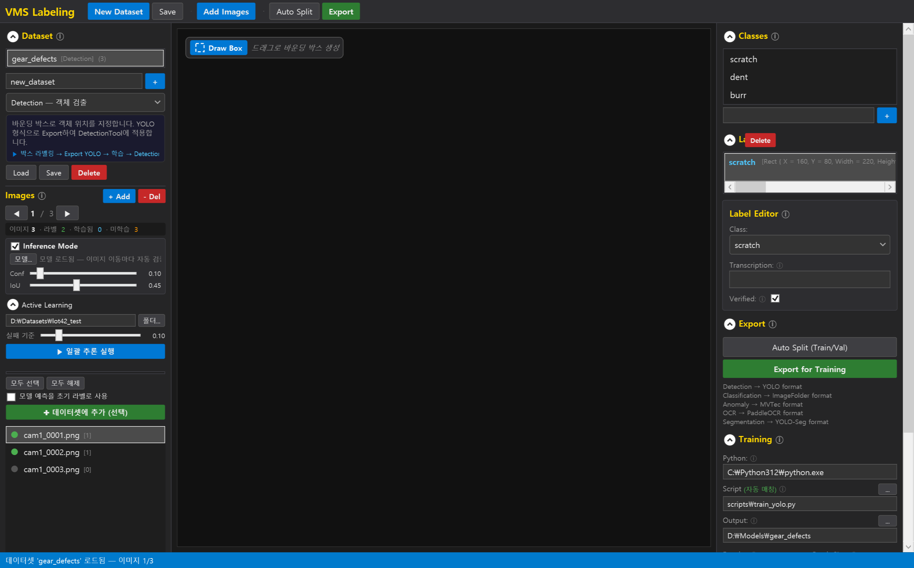
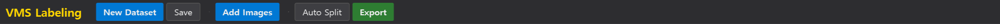
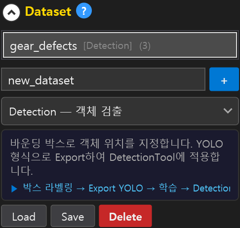
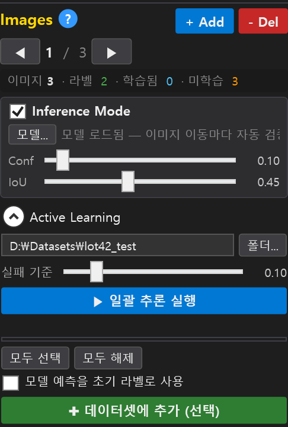
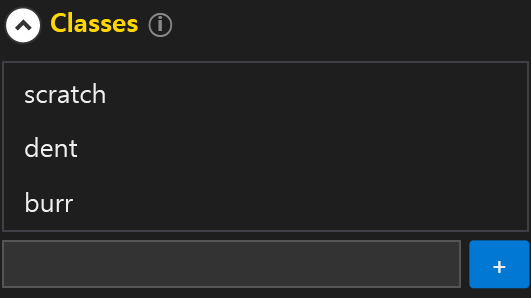
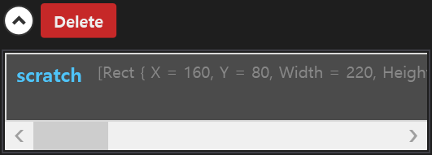
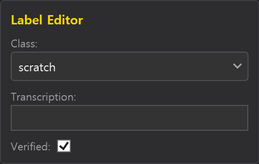
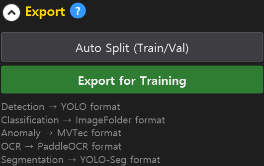
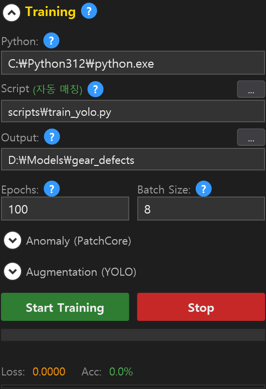
무엇을 검사할지에 따라 다섯 가지 작업 유형 중 하나를 고릅니다. 유형마다 정답을 표시하는 방법이 다릅니다:
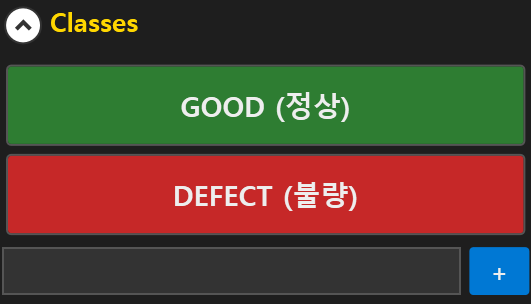
| 작업 유형 | 용도 | 정답 표시 방법 |
|---|---|---|
| Detection (객체 검출) | 결함이 어디 있는지 찾기 | 마우스 드래그로 결함 둘레에 상자를 그립니다 |
| Classification (분류) | 이미지 전체를 종류별로 구분 | 이미지마다 해당하는 클래스 버튼을 누릅니다 |
| Anomaly (이상 탐지) | 정상/불량 구분 — 불량 사진이 적을 때 유리 | [GOOD (정상)] / [DEFECT (불량)] 버튼으로 분류합니다 |
| OCR (문자 인식) | 각인 · 라벨의 문자 읽기 | 문자 영역에 상자를 그리고 정답 텍스트를 입력합니다 |
| Segmentation (분할) | 객체의 정확한 윤곽까지 필요할 때 | SAM 모델을 불러온 뒤 객체를 클릭하면 윤곽이 자동으로 생깁니다 |
MLOps 모델 레지스트리를 운영하는 현장에서는 학습이 끝난 모델 파일을 PC 마다 복사하지 않고 레지스트리에 올립니다. Training 섹션의 [레지스트리에 등록] 버튼을 누르면 창이 열립니다:
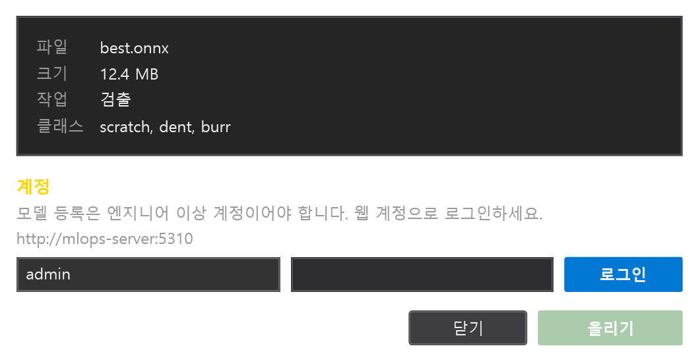
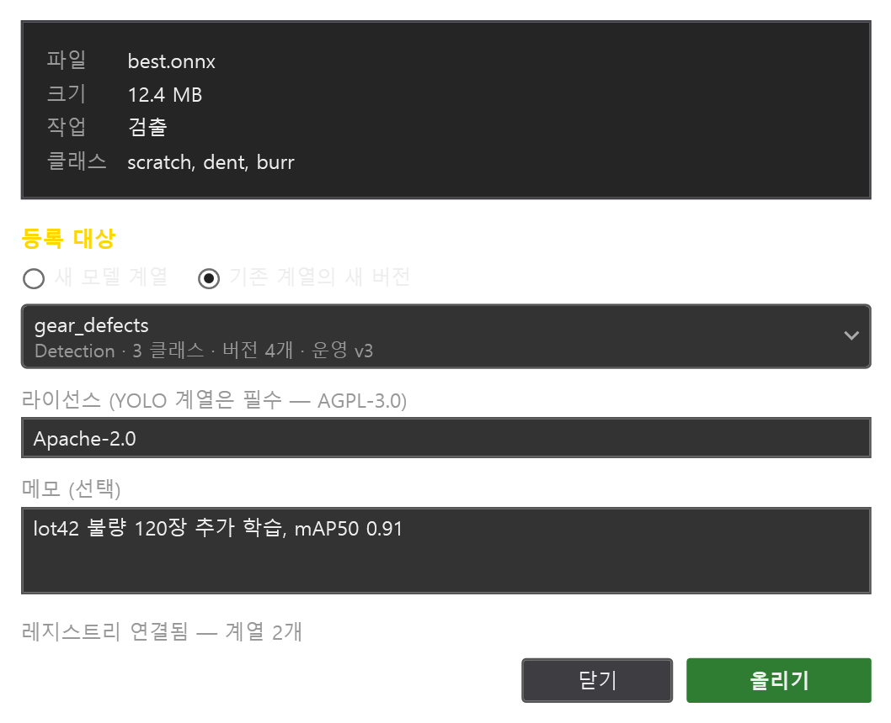
올라간 버전은 후보(Candidate) 상태라 라인에 바로 나가지 않습니다. MLOps 관리 화면에서 스테이징 → 운영으로
승격해야 라인 PC 가 model:// 참조로 받아 갑니다(본편 §5.10). 이 창은 설정 마법사 2단계 고급 설정의
MLOps 서버 주소 와 Web 서버 주소 가 있어야 열리며, 없으면 무엇이 빠졌는지 알려 줍니다.
라벨링을 웹(MLOps 데이터 관리 화면)에서 했다면 그 결과를 이 도구로 받아 학습할 수 있습니다. Export 섹션의 [웹 데이터셋 내려받기] 를 누르면 창이 열립니다:
{판 이름}-{해시 8자리})가 만들어지고 학습 데이터셋 경로가 그 폴더로
자동 설정됩니다. 바로 [Start Training] 을 누르면 됩니다. 같은 판을 다시 받으면 폴더를 비우고 새로 풉니다.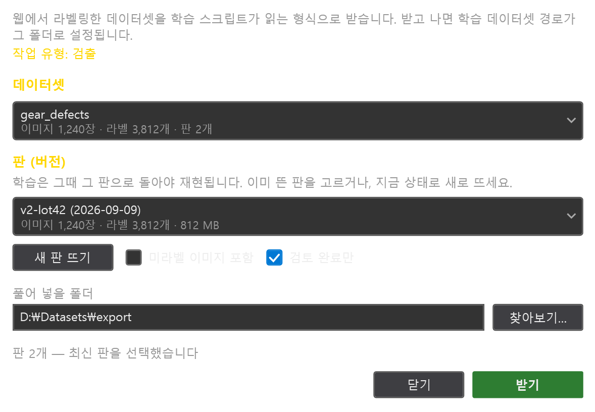
왼쪽의 Inference Mode 를 켜면 학습된 모델이 이미지를 넘길 때마다 자동으로 검사해서 결과 상자를 화면에 겹쳐 보여줍니다 — 학습이 잘 됐는지 그 자리에서 확인할 수 있습니다. 두 개의 슬라이더로 민감도를 조절합니다:
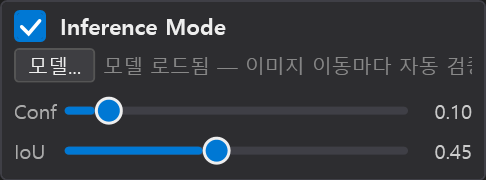
모델을 효율적으로 키우는 기능입니다. 학습에 쓰지 않은 사진 폴더를 지정하고 [일괄 추론 실행] 을 누르면, 모델이 잘 못 맞히는 사진일수록 위에 오도록 골라 줍니다. 고른 사진을 [데이터셋에 추가] 로 가져와 라벨링하고 다시 학습하면, 모델이 약한 부분부터 보강됩니다. "모델 예측을 초기 라벨로 사용" 을 켜면 모델의 검출 결과가 라벨로 미리 채워져 검토만 하면 됩니다.
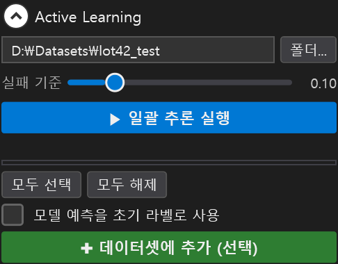
Segmentation 데이터셋에서는 오른쪽 SAM Model 섹션에서 모델 파일 두 개 (Encoder/Decoder)를 지정하고 [Load SAM Model] 을 누릅니다. 그 다음 이미지에서 객체를 클릭만 하면 윤곽 마스크가 자동으로 만들어집니다:
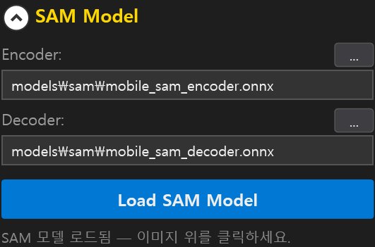
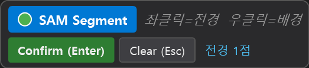
학습 기능은 별도로 설치한 Python 3.12 와 파이썬 패키지로 동작합니다. 라벨링과 Inference Mode(학습 결과 확인)는 파이썬 없이도 됩니다. 아래 준비는 설치 담당자가 학습용 PC 에서 한 번만 합니다.
| 작업 유형 | 설치 명령 (관리자 PowerShell) |
|---|---|
| Detection (객체 검출) — 기본 백본 D-FINE | py -3.12 -m pip install torch torchvision "transformers>=4.52" onnx onnxruntime pyyaml(선택) py -3.12 -m pip install torchmetrics pycocotools — 학습 패널에 검증 mAP50 표시 |
| Segmentation (인스턴스 분할) — RF-DETR-seg | py -3.12 -m pip install "rfdetr[train]>=1.10,<2" onnx onnxruntime세그멘테이션 데이터셋을 열면 학습 스크립트가 train_rfdetr_seg.py 로 자동 선택됩니다(COCO 형식 내보내기).
결과 모델은 비전 설정의 RF-DETR-seg 도구(본편 §5.10)에 지정합니다. |
| Classification (분류) | py -3.12 -m pip install torch torchvision onnx |
| Anomaly (이상 탐지) | py -3.12 -m pip install anomalib torch torchvision onnx (anomalib 없으면 간이 PatchCore 로 자동 전환) |
| OCR (문자 인식) | py -3.12 -m pip install paddlepaddle paddleocr paddle2onnx onnx |
| Segmentation 라벨링 보조 (SAM) | 모델 파일 2개(Encoder/Decoder ONNX)만 있으면 됨 — 설치 담당자에게 요청 |
NVIDIA GPU 를 쓰려면 torch 는 CUDA 빌드(예: --index-url https://download.pytorch.org/whl/cu124)로 설치합니다.
CPU 만으로도 학습은 되지만 매우 느립니다.
ustc-community/dfine-small-obj2coco). 인터넷이 없는 PC 는 세 파일(config.json,
preprocessor_config.json, model.safetensors)을 받아 둔 폴더 경로를 입력란에 넣습니다.py -3.12 -m pip install truststore 를 설치하면 Windows 인증서 저장소를 사용해 해결됩니다.best.onnx. 본편 §5 의 Detection 도구에 지정하면 모델 종류(D-FINE / YOLO)를 자동으로 판별합니다.
Input Size 는 학습 imgsz(기본 640)와 같게 둡니다.AI 학습 도구가 기본으로 쓰는 학습 스택은 상업적 사용에 제한이 없는 라이선스입니다 — D-FINE(Apache 2.0) · RF-DETR(Apache 2.0) · HuggingFace transformers(Apache 2.0) · torchvision(BSD) · anomalib(Apache 2.0) · PaddleOCR(Apache 2.0) · MobileSAM(Apache 2.0). 학습으로 만든 모델 파일은 귀사의 자산으로 고객사에 자유롭게 배포할 수 있습니다.
train_yolo.py 로 바꾸는 것은
Ultralytics Enterprise License 를 보유한 사이트에서만 하세요. 그 외에는 기본값(D-FINE)을 사용합니다.train_rfdetr_seg.py) 사전 준비(§2.1) ·
라이선스 표에 RF-DETR(Apache 2.0) 추가(§3). 라인 불량 사진 수집(본편 §4.3) 상호 참조. 두 창의 그림 3장. (SW v1.32.0~v1.33.0)